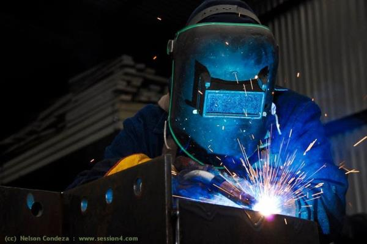
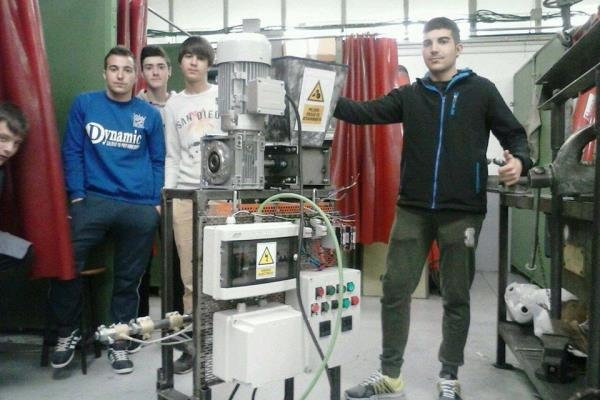

CPIFP Pirámide
Noticias
oferta formativa
Mantenimiento electromecanico
¿Que es?
Este profesional ejerce su actividad en empresas, mayoritariamente
privadas, dedicadas al montaje y al mantenimiento o instalaciones de
maquinaria, equipo
industrial y líneas automatizadas bien por cuenta propia o ajena.
Este profesional será capaz de:
- Realizar las operaciones asociadas al montaje y mantenimiento de las instalaciones.
- Acopiar los recursos y medios necesarios para acometer la ejecución del
montaje o del mantenimiento de las instalaciones.
- Proponer modificaciones de las instalaciones de acuerdo con la documentación técnica para garantizar la viabilidad del montaje, resolviendo los problemas de su competencia e informando de otras contingencias.
- Montar los sistemas mecánicos, hidráulicos, neumáticos y demás elementos auxiliares
asociados a las instalaciones electromecánicas.

